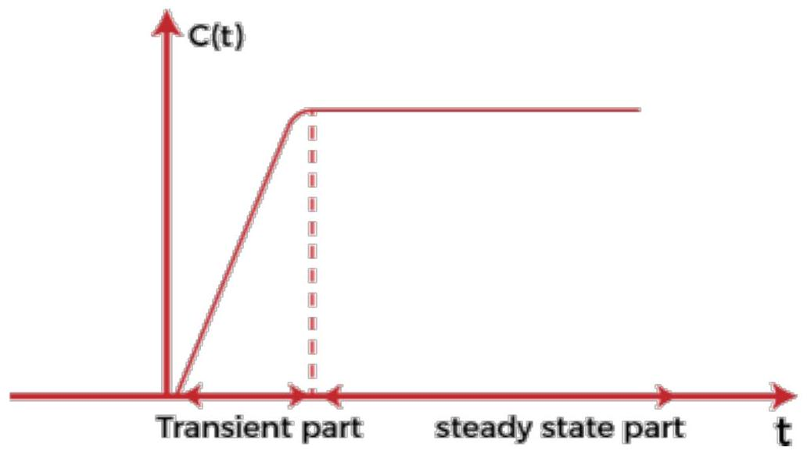
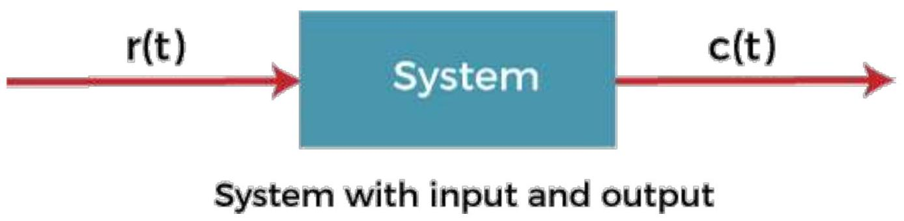
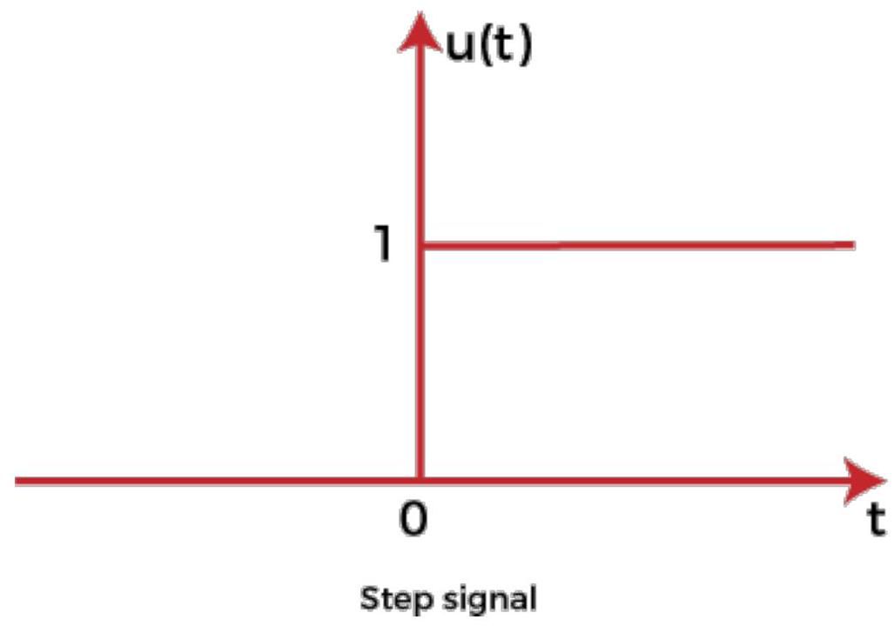
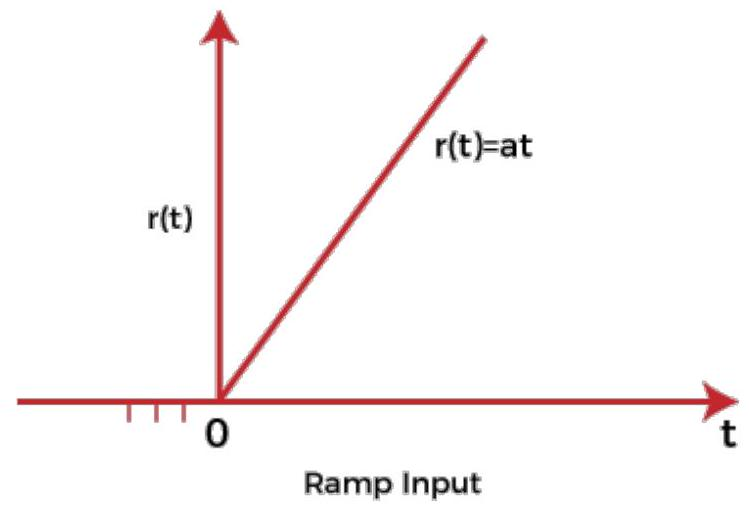
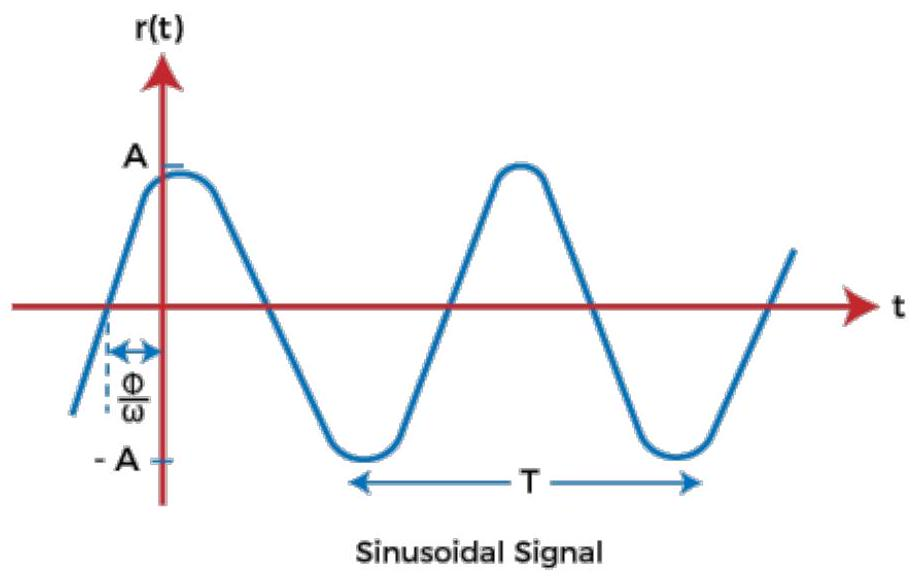
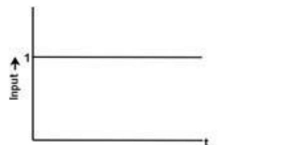
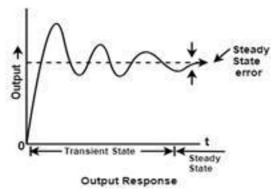
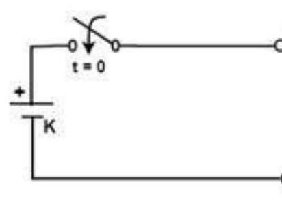
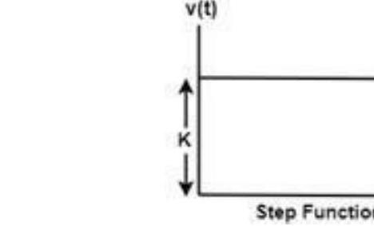
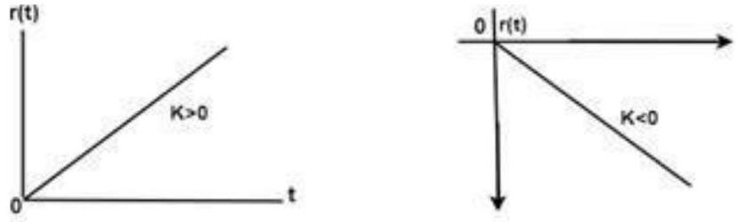

Unit-5: Time Domain Analysis of Control Systems
Control system- Time response Analysis
The primary purpose of the time response analysis is to evaluate the system's performance with respect to time. The time-response graph is shown below:
It comprises of two parts, transient part and the steady state part.
After applying an input to the control system, the output takes some time to reach the steady condition. The response during this stage is known as transient response and constitutes the transient part of the graph, as shown above. The graph when achieves the steady start after the transient part is known a steady part.
To describe a system, we need to develop the relationship between the inputs and output of the system that are the functions of time. The most common model used to describe such behavior is known as the differential equation. The analysis of the system can be done with the help of a differential equation by applying different inputs to it.
The common input signal is shown below:
 System -> output c(t), labeled 'System with input and output'." class="content-image">A test signal r(t) is applied as the input to the system that results in the response c(t). The input signal of a system can take many forms.
Transient and Steady-State Response
Transient Response
It is a part of the time response that reaches 0 (zero) when the time becomes very large. In the graph analysis containing poles and zeroes, the poles lying on the left half of the s-plane gives the transient response. We can also say that it is a part of the response where output continuously increases or decreases. The transient response is also known as the temporary part of the response.
Or
Transient response is defined as the change in the response of the system from the equilibrium state.
For example,
The switching time of a bipolar transistor
The characteristics BJT or Bipolar Junction transistor depicts the transient nature.
Steady-state response
The response that comes after the transient response is called the steady-state response. In the graph analysis containing poles and zeroes, the poles on the imaginary axis give the steady-state response. We can also say that it is a part of the response where output remains constant. The output can also vary periodically with constant amplitude and frequency. The steady-state response is also known as the steady-state part of the response. It is a function of the input signal and hence also known as the forced response of the system.
Let's discuss some examples where we will find the transient and steady-state terms of the given equation.
Examples
Example 1: $5 + 2e^{-t}$
Solution:
Here, the transient part of the equation is $2e^{-t}$ because as t approaches to infinity, the term becomes 0. Hence, $2e^{-t}$ is the transient term. In the case of the first term 5, it will remain same when t approaches infinity. Hence, 5 is the steady-state term of the equation.
Example 2: $10 + 5e^{t}$
Solution:
Here, the first term, 10, is the steady-state term of the equation because it will remain the same when t approaches infinity. In the case of the second term, $5e^{t}$, the result is infinity when t approaches infinity. Hence, it is not a transient term. It is because something to the power infinity is always infinity.
So, there is only a steady-state term in the equation.
Standard signals
- Step Input signal
- Ramp input signal
- Sinusoidal input signal
- Impulse input signal
Step Input signal
For the positive value, the step input shows constant values of the time. It has zero value for the negative value of the time signal. The initial value of the signal is and the transition is in the form of step size with a constant value. If the constant value of the signal is 1, it is called step input signal, which is represented as:
=0." class="content-image">The value of the signal is:
0 for t=0 and
1 for t>0
The graph is a function of one variable named t.
Ramp input signal
The graph of the ramp input signal is in the shape of ramp. It depicts the linear increase that begins at some specific point. The value of the ramp signal shows the constant change with respect to time. The value of the signal is 0 for negative values. It means that it shows the output for positive inputs.
The ramp function is represented as:
The value of the signal is:
At for t>0 and
0 for t<0
If the value of A is 1 when t>0. The signal is known as unit ramp signal.
Sinusoidal input signal
A sinusoidal input is one whose oscillations can be described by an equation in the formof sine. The response of the linear process to a sinusoidal is sinusoidal. The signal is given by:
The sinusoidal signal in the control system is represented as:
The sine wave starts from zero, covers positive value, reach zero, covers negative values, and again reaches zero, as shown above.
Impulse Input signal
The impulse signal is a type of high amplitude signal and has a very short duration. It means that the magnitude approaches infinity when the time reaches zero. Thus, we can say that the value of the signal is infinity at t =0. Otherwise, its value is 0.
Its integration from -infinity to infinity is 1, as shown above.
It is a physical non-existing signal, which is defined based on the area concept. It is not based on the amplitude concept. The impulse input signal is represented as:
Transient and Steady State Analysis of Linear Time Invariant (LTI) Systems
Time Response Analysis
When the energy state of any system is disturbed, and the disturbances occur at input, output or both ends, then it takes some time to change from one state to another state. This time that is required to change from one state to another state is known as transient time and the value of current and voltage during this period is called transient response.
Depending upon the parameters of the system, the transient may have oscillations which may be either sustained or decaying in nature.
Thus time response of a control system is divided into two parts-
- Transient response analysis.
- Steady State Analysis.
Transient State response
It deals with the nature of the response of a system when subjected to an input.
Steady State Analysis
It deals with the estimation of the magnitude of steady-state error between input and output.
Different Type of Standard Test Signals
The various inputs or disturbances affecting the performance of a system are mathematically represented as a standard test signal.
- Step signal ( sudden input )
- Ramp Signal (velocity type of input )
- Parabolic Signal ( type of acceleration input )
- Impulse signal (sudden shock )
NOTE
- Step signal and impulse signal are bounded input signal.
- Ramp signal and parabolic signal are an unbounded input signal.
- Step signal, a ramp signal, and periodic signal are for time domain analysis. Only an impulse signal is essential for steady-state analysis.
Characteristics of Time-domain Analysis
- Every transfer function representing the control system is of a particular type of order.
- The steady state analysis depends upon the type of the system.
- The type of the system is determined from open loop transfer function G(S).H(S)
Transient Time: The time required to change from one state to another is called the transient time.
Transient Response: The value of current and voltage during the time change is called transient response.
 So, we can say that the transient response is the part of the response which goes to zero as time increases and the steady-state response is the part of the total response after transient has died. If the steady-state response is the part of the output does not match with the input then the system has a steady state error.
Test input signal for transient analysis
For the analysis of the time response of a control system, the following input signals are used.
Step Function
 A unit step function is denoted by u(t) and is defined as
$u(t) = 0 ; t=0$ and
$= 1; t>0$
Laplace Transform:
Step function is also called displacement function. If input is R(S), then $R(s) = 1/s$
Ramp Function
=0." class="content-image">This function starts from the origin and linearly decreases or increases with time as shown in the figure above.
Let r(t) be the ramp function then
$r(t) = 0 \quad ; t<0$
$= Kt \quad ; t>0$
Where 'K' is the slope of the line, for a positive value of 'K' the slope is upward, and the slope is downward for the negative value of 'K.'
Laplace transform
Parabolic Function
=0." class="content-image">The value of r(t) is zero when t<0 and is a quadratic function of time when t>0.
Therefore, $r(t) = 0 \quad ; t<0$
$= (Kt^2)/2 \quad ; t>0$
Where 'K' is constant for unit parabolic function K = 1. The unit parabolic function is defined as
$r (t) = 0 \quad ; t<0$
$= t^2/2 \quad ; t>0$
Laplace Transform
Impulse Function
A unit impulse function is defined as
Thus we can say that impulse function has zero value everywhere except at t=0 where the amplitude is infinite.
Time Response of first order system
In the above transfer function, the power of 's' is the one in the denominator. That is why the above transfer function is of the first order, and the system is said to be the first order system.